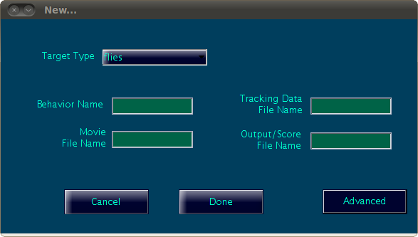

Each behavior in JAABA corresponds to a different JAABA project, stored in a MATLAB file with the extension .jab.
All data associated with a given behavior classifier is stored in a JAABA project file with the extension .jab. For each behavior, you need a separate JAABA project. This includes the:
The following parameters must be set for each JAABA project. Information on the experiment directory structure referred to below can be found here.
| Field name | Example value | Description |
| Target Type | flies | Type of animal whose behavior is being analyzed. This really refers to the type of tracking data which is being input. In our work, we use "flies" for both flies and mice and "larvae" for larvae. Other options, e.g. "larvae_mwt" correspond to larvae as well, but tracking using the MWT. This affects what per-frame and window features are used and how the animal's current position is plotted. |
| Behavior Name | Chase | Name of the behavior, used in the GUI for referring to the behavior. |
| Movie File Name | movie.ufmf | Name of the movie
file. For each experiment, JAABA reads and shows this file from the experiment directory. |
| Tracking Data File Name | trx.mat | Name of the MATLAB mat file within each experiment directory in which the animals' trajectories are stored. |
| Output/Score File Name | scoresChase.mat | Name of the MATLAB mat file within the experiment directory where the automatic behavior classifications will be output. |
Description of JAABA project parameters.
TODO: add the advanced parameters
The most recent behavior classifier trained using JAABA is also saved in the JAABA project file. The classifier is what is used to automatically predict the behavior of a given animal in a given frame. This classifier can be used to classify the behavior of the animals in a new video outside of your training data set.
The data that has been used for training the classifier is also stored in the JAABA project file. This includes:
- The locations of the experiment directories added to this project (see Adding Experiments to the Current Project).
- The behavior labels manually entered by the user for any experiments, animals, and frames in this project.
You can create a new project either by
- Selecting Start a new project in the initial dialog when JAABA starts
- Selecting the File->New menu at any time.
This will cause the New... project dialog box to open:

New Project Dialog
In this dialog, you can specify the Project Parameters described above.
After you have set the JAABA project parameters, you can add experiments to the project. At any time while JAABA is open, you can create a new project by selecting the File->New menu. You can change many of the project settings after JAABA is open by selecting the appropriate menu option:
- File->Change Behavior Name...
- File->Change Score File Name...
- File->Change Experiment List...
It may be useful to create a new JAABA project using an existing project
as a template. For example, suppose you have made a "walk" classifier
and now want to make a "stop" classifier that uses all the same settings.
To do this, you must perform the following steps:
- Open your existing JAABA project (e.g. your "walk" project).
- Save the existing project with a new name by selecting the
File->Save As... menu (e.g. "stop_v1.jab").
- Remove all the experiments in this project by selecting
File->Change Experiment List... and deleting all experiments.
- Change the behavior name in this project by selecting
File->Change Behavior Name... (e.g. change to "stop").
- Change the score file name in this project by selecting
File->Change Score File Name... (e.g. change to "scores_stop.mat").
All data associated with the current JAABA project can be saved to the
current .jab file by selecting File->Save or to a new .jab file
by selecting File->Save As... from the main JAABA GUI.
The window features for all
labeled training data must be computed. If you close and open a
JAABA project with a large training data set, it can be time-consuming
to recompute all the window data. It is possible to store (cache) the
window data into the .jab file by selecting the menu
File->Cache WindowData in the Jab file. While this will require
some disk space, it decreases the amount of time involved in
closing and re-opening a JAABA project.
Creating Different Versions of a Behavior Classifier
We often find it useful to create different versions of a behavior
classifier. This can be thought of as creating a "restore point" that
we can go back to if we do not like the modifications to the classifier
we make. For example, we might do this if we have a classifier that is
working fairly well, but we want to see what happens if we add a new
type of data. To do this, we use the File->Save As... to create a
new .jab file. Then, we can go back to the previous .jab file if we are
unhappy with the changes we make.